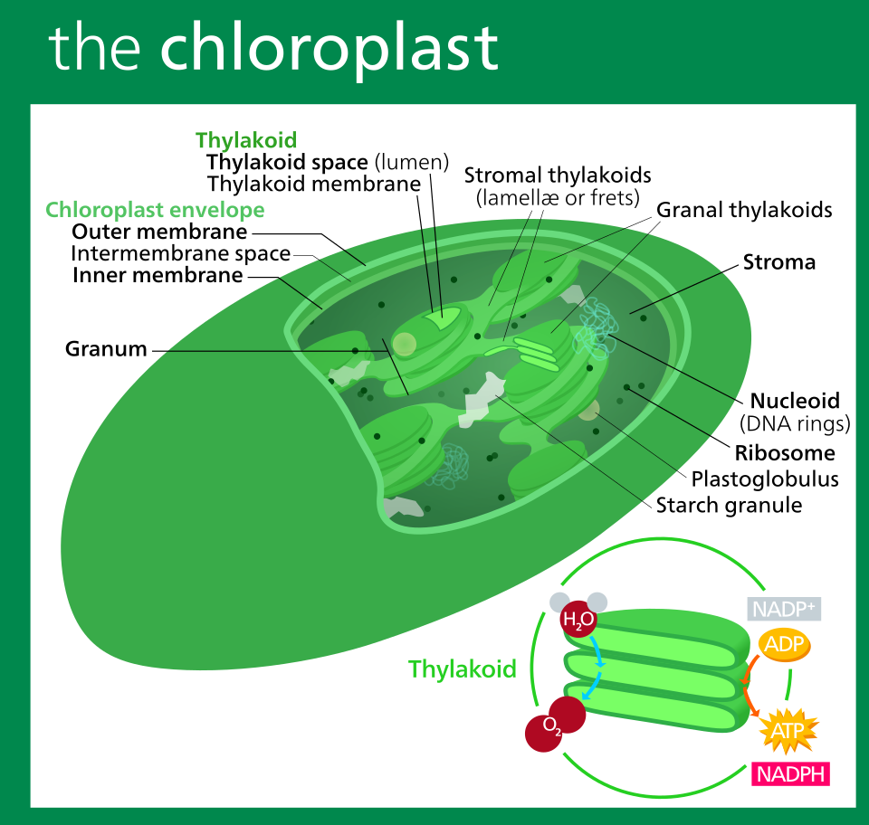

Biology I Honors · Unit 3 · Lab Packet Check (formative) · Wed/Thu Oct 28–29
Lab Packet Formative: the 100% mastery test
This test covers every section of the Unit 3 Lab Packet (pages 1–17): Enzyme (catalase), ATP Candy Modeling, Cellular Respiration and the Poison Case Study, the Photosynthesis STEM Case, the Algae Bead lab, and the Light Intensity CER. There are 88 questions.
1 · Learn Read each section's “Learn first” card. It gives the big idea from the packet.
2 · Try Answer without hints. Write short answers on paper first, then open the model answer.
3 · Check and repeat Press Check all answers. Then press New attempt: the questions and options are shuffled, so you learn the idea, not the letter.
Catalase breaks down hydrogen peroxide, a toxic by-product of cell activity, into water and oxygen gas. The enzyme is not used up, so the same liver piece keeps working. The packet tests three factors: reuse, temperature, and pH.
Reaction: 2 H₂O₂ → 2 H₂O + O₂. The foam is oxygen gas.
Catalase is an enzyme. It is reusable. The substrate (H₂O₂) is used up and cannot be reused.
Boiling denatures catalase: the shape changes and the active site stops working.
Freezing slows molecules but does not denature. Activity returns when the sample warms up.
Optimum pH from the packet data: pH 7 (rate 100). Activity falls on both sides and reaches zero at the extremes.
Optimum temperature from the packet data: 98 °F (rate 110). Above that, activity falls quickly as the enzyme denatures.
E1 · #1Multiple choice
What gas is released through the bubbles when catalase acts on hydrogen peroxide?
Hint 1
Look at the equation in the lab introduction: 2 H₂O₂ → 2 H₂O + ?
Hint 2
The product that is a gas and is not water. Look at the O₂ in the equation.
Why this question?
The packet asks you to identify the product from the equation, which is the first step of any reaction question.
Why this answer?
O₂ is the only gas in the equation. CO₂ is not in this reaction. Water is a liquid. H₂ is not a product.
Based on what?
Lab introduction equation; Part A question 9 (teacher key Lab 1, Part A).
E2 · #2Multiple choice
Looking at your reactions, is catalase reusable?
Hint 1
Part A step 5 pours fresh hydrogen peroxide onto the same liver piece.
Hint 2
Enzymes are biological catalysts. Ask whether the enzyme changes during the reaction.
Why this question?
The packet asks you to reason from the experiment itself: the same tube, a second dose, and a second reaction. That tests the idea of reusable catalysts.
Why this answer?
Enzymes are not consumed (Unit 3A slide 10). The bubbles in step 5 show the enzyme still works. Substrate is different (see E4).
Based on what?
Part A questions 'Looking at your reactions, is catalase reusable?' (teacher key Lab 1, Part A).
E3 · #3Short answer (self-scored)
Did the liver react with the used liquid in test tube B? How do you know?
Scoring checklist (tick each point you included)
Model answer (try writing yours first)
No. The liquid in tube B came from tube A, after the H₂O₂ had already been converted into water and O₂. When fresh liver was added (step 7), there was no new bubbling, because there was no H₂O₂ left to break down.
Hint 1
Think about what the liquid in tube B still contains. Is there any H₂O₂ left?
Hint 2
If the substrate is gone, what can the enzyme act on? Nothing.
Why this question?
This question checks whether you know the difference between the enzyme (reusable) and the substrate (used up).
Why this answer?
The key answer is 'No': the substrate is gone, so the enzyme has nothing to react with. Students often think the liver is the thing that gets used up.
Based on what?
Part A question 'Did the liver react with the used liquid in tube B?' (teacher key Lab 1, Part A).
E4 · #4Multiple choice
Is the substrate (hydrogen peroxide) reusable?
Hint 1
Compare the reactant and products in the equation. Which bonds change?
Hint 2
Substrate is changed by the reaction. Enzymes are not.
Why this question?
Students confuse substrates (used up) with enzymes (reused). This question checks that separation directly.
Why this answer?
Substrate is consumed, enzyme is not (Unit 3A slide 10; key Lab 1). Options A and C treat the substrate as reusable, which it is not.
Based on what?
Part A question 'Is substrate reusable? Why or why not?' (teacher key Lab 1, Part A).
E5 · #5Multiple choice
Part B: After boiling the liver (tube C), what happens to the foam, and why?
Hint 1
Heat changes the shape of proteins. What happens to the active site when the shape changes?
Hint 2
Heat that is much too high destroys enzyme shape. It does not speed up the reaction past the optimum.
Why this question?
This tests the central idea of denaturation, which appears on the exam as a graph or a 'what happens' question.
Why this answer?
Option B names denaturation and the lost active site. Option A confuses optimum heat with overheating. Option D is wrong because the H₂O₂ is still there; only the enzyme is damaged.
Based on what?
Part B questions 'What did hot water do to the enzyme?' (teacher key Lab 1, Part B).
E6 · #6Multiple choice
Part B: Freezing the liver (tube D) does not stop the reaction when it is warmed. Which best explains this?
Hint 1
Compare what cold does with what boiling does to the enzyme's shape.
Hint 2
Low temperature means slow molecules. Denaturation means a changed shape. Which one happened?
Why this question?
This is the contrast between temperature that slows an enzyme and temperature that destroys it, a common exam trap.
Why this answer?
Option B separates slowing (reversible) from denaturation (usually permanent). Option A is the trap: freezing is not the same as boiling.
Based on what?
Part B question 'Did freezing the liver affect its activity?' (teacher key Lab 1, Part B).
E7 · #7Multiple choice
Part C: The liver soaked in lemon juice (low pH) shows little or no foam. What is the best conclusion?
Hint 1
Lemon juice is acidic. What do acid H⁺ ions do to protein bonds?
Hint 2
Is the effect faster or slower? Look at the foam.
Why this question?
This tests whether you can link a pH change to a loss of shape and function.
Why this answer?
Option B matches the foam result and denaturation. Option A reverses the effect. Option C and D have no basis in the experiment.
Based on what?
Part C question 'What was the effect of a low pH on catalase activity?' (teacher key Lab 1, Part C).
E8 · #8Short answer (self-scored)
How does pH affect an enzyme? Use the words 'shape' and 'active site'.
Scoring checklist (tick each point you included)
Model answer (try writing yours first)
pH changes the concentration of H⁺ (acid) or OH⁻ (base). This disrupts the ionic and hydrogen bonds between the amino-acid R-groups that hold the protein folded. When the shape changes, the active site no longer fits the substrate, so the enzyme denatures and the rate drops.
Hint 1
Acid adds H⁺ ions. What do charged groups on the protein do when H⁺ is added?
Hint 2
End your answer with what happens to the active site.
Why this question?
Part C asks how pH affects an enzyme. This is the explanation the packet wants, and it is the reasoning behind most graph questions.
Why this answer?
A strong answer names the bonds, the shape change, and the active site. Naming only 'denatures' is incomplete.
Based on what?
Part C question 'How does pH affect an enzyme?' (teacher key Lab 1, Part C; Unit 3A slide 14).
E9 · #9Multiple choice
Part D (pH table): At which pH does catalase work best, using the packet data?
Hint 1
Find the largest 'Rate of reaction' value in the pH table.
Hint 2
The highest rate is 100. Which pH row has it?
Why this question?
Reading a table or graph to find the peak is the first skill tested on the exam's data questions.
Why this answer?
Option C is the peak. Options A and B are on the rising side. Option D is on the falling side (rate 50).
Based on what?
Part D pH table and question 1 'At what pH does catalase work best?' (teacher key Lab 1, Part D).
E10 · #10Multiple choice
Part D (pH table): On the acid side, the rate reaches 0. At what pH range?
Hint 1
Scan the pH table from pH 1 upward. Where do the rates first read 0?
Hint 2
The first two rows of the table are 0 and 0.
Why this question?
This question checks that you read both ends of the curve, not only the peak.
Why this answer?
Option A is where the rate is 0. Options B and C still have measurable rates. Option D is on the basic side.
Based on what?
Part D pH table and question 2 (teacher key Lab 1, Part D).
E11 · #11Multiple choice
Part D (temperature table): At what temperature does catalase work best?
Hint 1
Find the largest value in the temperature 'Rate of Reaction' column.
Hint 2
The highest rate is 110, not 100.
Why this question?
This question combines a table read with the link to human body temperature, which the packet builds in question 3.
Why this answer?
Option B is the peak. Option C is a trap: 100 °F has a lower rate than 98 °F even though 100 looks like the 'round' answer.
Based on what?
Part D temperature table and question 3 (teacher key Lab 1, Part D).
E12 · #12Multiple choice
Part D (temperature table): The packet asks what happens if body temperature spikes to 104 °F. What rate does the table show?
Hint 1
Find 104 in the temperature column, then read across to the rate.
Hint 2
Compare that rate with the 110 at the optimum.
Why this question?
This tests reading one value and interpreting how far the enzyme has dropped from its optimum.
Why this answer?
Option C is the value at 104 °F. Option B is the rate at 102 °F, a common mix-up with the wrong row.
Based on what?
Part D temperature table and question 4 (teacher key Lab 1, Part D).
E13 · #13Short answer (self-scored)
Explain why a high fever (104 °F) harms the body's enzymes, using the idea of enzyme shape.
Scoring checklist (tick each point you included)
Model answer (try writing yours first)
High temperature gives the protein's molecules too much kinetic energy. The hydrogen and ionic bonds that hold the enzyme's 3D shape break, so the active site loses its shape. The enzyme denatures and can no longer bind its substrate, so cellular reactions such as respiration slow down.
Hint 1
What does heat do to bonds in a protein?
Hint 2
Link the shape change to the active site, then to the body's reactions.
Why this question?
This question asks for the full chain of reasoning: heat → bonds → shape → active site → function. The exam uses this format.
Why this answer?
A complete answer has all four links. Stopping at 'the enzyme breaks' earns partial credit.
Based on what?
Part D question 5 and question 4 (teacher key Lab 1, Part D; Unit 3A slide 13).
E14 · #14Multiple choice
Which statement best explains why boiling reduces the foam to 0 but freezing does not?
Hint 1
Compare the two results: 0 foam after boiling, strong foam after freezing and warming.
Hint 2
Which temperature changes the enzyme's shape, and which only slows it down?
Why this question?
This is the main idea of the temperature part of the lab. It also appears on the exam.
Why this answer?
Option B matches the data. Option C reverses the effect. Option D is wrong because H₂O₂ is not affected in the tubes.
Based on what?
Parts B questions 1–2 and teacher key Lab 1, Part B.
E15 · #15Short answer (self-scored)
A student says 'the enzyme is used up in the reaction.' Correct the statement and explain.
Scoring checklist (tick each point you included)
Model answer (try writing yours first)
The enzyme is not used up. Catalase is released unchanged after each reaction and can bind more substrate. It is the substrate (H₂O₂) that is used up and converted into water and oxygen.
Hint 1
Compare Part A step 5 (fresh H₂O₂ onto the same liver) with the question of reuse.
Hint 2
Which molecule is the catalyst? Which one is the reactant?
Why this question?
This tests the enzyme-versus-substrate idea that the packet builds through Part A and that appears in MCQs.
Why this answer?
Correcting the statement needs both halves: the enzyme is reused and the substrate is used up.
Based on what?
Part A questions on reuse; Unit 3A slide 10; teacher key Lab 1, Part A.
Section 2
ATP Candy Modeling: structure, hydrolysis, and recycling
Packet source: Packet ATP CANDY MODELING: Part A (chemical structure), Part B (model), Part C (using ATP), Part D (reusing ADP)
Learn first
ATP is the energy carrier of the cell. It has three parts: adenine, ribose, and three phosphate groups. Breaking off the last phosphate (hydrolysis) releases usable energy, and the cell recycles ADP back into ATP.
Adenine has nitrogen that ribose does not. Ribose has oxygen-rich sugar structure. Both contain C and H.
ATP + H₂O → ADP + Pᵢ + energy (hydrolysis). ADP + Pᵢ + energy (from food) → ATP (phosphorylation).
ATP is a rechargeable carrier, not long-term storage. Cells recycle it continuously.
A1 · #1Multiple choice
What is the molecular formula of ribose?
Hint 1
Ribose is a 5-carbon sugar. Glucose has 6 carbons, so C₆H₁₂O₆ is not ribose.
Hint 2
Count the C, H, and O atoms in the ribose drawing.
Why this question?
Reading a molecular formula from a structure is a skill tested in the Part A blanks.
Why this answer?
C₅H₁₀O₅ matches the drawing. The other options are adenine, phosphoric acid, and glucose.
Based on what?
Part A question 1 (teacher key Lab 2, Part A), figure: ribose structure.
A2 · #2Multiple choice
What is the molecular formula of adenine?
Hint 1
Adenine contains nitrogen in its ring. Which formula has five N atoms?
Hint 2
Compare it with ribose: adenine has no oxygen.
Why this question?
This question checks the difference between the base and the sugar in ATP.
Why this answer?
Adenine has five nitrogen atoms in its double-ring structure, which is why C₅H₅N₅ is correct.
Based on what?
Part A question 2 (teacher key Lab 2, Part A), figure: adenine structure.
A3 · #3Multiple choice
What atom is present in adenine but not in ribose?
Hint 1
Compare the two formulas: C₅H₅N₅ and C₅H₁₀O₅.
Hint 2
Which element appears in adenine's formula but not ribose's?
Why this question?
Comparing two formulas to find the difference is a standard skill in biochemistry questions.
Why this answer?
Nitrogen is in adenine only. Oxygen is in ribose only (answer to question 4). H is in both. P is in neither.
Based on what?
Part A question 3 (teacher key Lab 2, Part A).
A4 · #4Multiple choice
What atom is present in ribose but not in adenine?
Hint 1
Look at the ribose formula. Which element is in ribose but missing from adenine?
Hint 2
This is the reverse of the previous question.
Why this question?
Reverse comparisons are a common exam format, so the packet asks both directions.
Why this answer?
Oxygen is the answer. Carbon is in both, so it is not unique to ribose.
Based on what?
Part A question 4 (teacher key Lab 2, Part A).
A5 · #5Multiple choice
What is the molecular formula of phosphoric acid?
Hint 1
Phosphoric acid has three hydrogens, one phosphorus, and four oxygens.
Hint 2
Count the atoms in the phosphoric acid drawing.
Why this question?
Phosphate groups are the energy part of ATP, so the formula matters for the model.
Why this answer?
H₃PO₄ matches the drawing: three H, one P, four O.
Based on what?
Part A question 5 (teacher key Lab 2, Part A), figure: phosphoric acid.
B1 · #6Multiple choice
In the ATP candy model, the big marshmallow represents what?
Hint 1
The big marshmallow sits at the centre of the model, with the toothpicks attached.
Hint 2
Which part of ATP is a sugar?
Why this question?
Matching each candy to a part of ATP is the 'model' skill the packet is named for.
Why this answer?
Ribose is the sugar in the middle. The gummy bear is adenine. The mini marshmallows are phosphates.
Based on what?
Part B question 6a (teacher key Lab 2, Part B).
B2 · #7Multiple choice
The 3 small marshmallows in the model represent:
Hint 1
Count the groups on the right side of the model.
Hint 2
ATP is named for 'tri' phosphate.
Why this question?
Tying the name 'adenosine triphosphate' to the model is a foundational vocabulary check.
Why this answer?
Three phosphates = triphosphate. Water is not part of the ATP model.
Based on what?
Part B question 6b (teacher key Lab 2, Part B).
B3 · #8Multiple choice
The gummy bear in the model represents:
Hint 1
The gummy bear is attached to the left toothpick.
Hint 2
Adenine is a nitrogen-containing base. Which candy in the model is the base?
Why this question?
Naming each part of the model is required for question 6 and for the exam's ATP diagrams.
Why this answer?
The gummy bear is the nitrogen base. Ribose is the big marshmallow.
Based on what?
Part B question 6c (teacher key Lab 2, Part B).
B4 · #9Multiple choice
The toothpicks in the model represent:
Hint 1
A toothpick joins two candies. What does a bond do in a molecule?
Hint 2
The bonds between the phosphates hold the energy.
Why this question?
Students often think the bonds are not important. This question asks you to see them as the place where energy is stored.
Why this answer?
Toothpicks join the parts, which is what a covalent bond does. Enzymes are not in the model.
Based on what?
Part B question 6d (teacher key Lab 2, Part B).
B5 · #10Short answer (self-scored)
Name the three parts that make up an ATP molecule, and say which part stores the energy.
Scoring checklist (tick each point you included)
Model answer (try writing yours first)
ATP has adenine (base), ribose (5-carbon sugar), and three phosphate groups. Adenine + ribose = adenosine. The energy is stored in the bonds of the phosphate groups, especially the last two.
Hint 1
The candy model gives you the answer in question 6.
Hint 2
Which part of ATP is the 'triphosphate' in the name?
Why this question?
This is the summary version of the model, the most likely written question on ATP structure.
Why this answer?
A full answer lists all three parts and names the phosphate bonds as the energy store.
Based on what?
Part A and Part B; teacher key Lab 2; Unit 3A slides 18.
C1 · #11Multiple choice
Which equation represents ATP hydrolysis, which releases energy for cell work?
Hint 1
Hydrolysis uses water. Which side of the arrow has H₂O?
Hint 2
Breaking the last phosphate off ATP makes ADP.
Why this question?
Writing the equation with the correct direction (energy out) is required in Part C question 3.
Why this answer?
Option B has water on the reactant side and energy on the product side. Option A is the synthesis direction.
Based on what?
Part C question 3 (teacher key Lab 2, Part C; Unit 3A slide 20).
C2 · #12Multiple choice
In the reaction ATP → ADP + Pᵢ + energy, what is the reactant?
Hint 1
A reactant is on the left side of the arrow.
Hint 2
Which molecule is written first?
Why this question?
Identifying reactants and products is question 4 in Part C.
Why this answer?
ADP and Pᵢ are products. Energy is released, not a reactant.
Based on what?
Part C question 4 (teacher key Lab 2, Part C).
C3 · #13Multiple choice
What are the products of ATP breakdown?
Hint 1
Products are on the right side of the arrow.
Hint 2
The molecule left after one phosphate is removed is ADP.
Why this question?
Naming products is question 5 in Part C.
Why this answer?
Option B lists all three products. Option A repeats the reactants. Glucose and oxygen belong to photosynthesis/respiration.
Based on what?
Part C question 5 (teacher key Lab 2, Part C).
C4 · #14Multiple choice
Which product is used by the cell to power work?
Hint 1
The packet asks which product the cell uses, not which one is recycled.
Hint 2
What powers muscle contraction and active transport?
Why this question?
This separates 'used directly' from 'recycled', a distinction tested on the exam.
Why this answer?
Energy is the product the cell spends. ADP is recycled. Option C is a reagent for regeneration.
Based on what?
Part C question 6 (teacher key Lab 2, Part C).
D1 · #15Multiple choice
ADP is recharged into ATP. Which equation shows this?
Hint 1
Recharging needs an input of energy. Where does the energy come from in animals?
Hint 2
The packet's question 3 in Part D has the blanks in this order.
Why this question?
Writing the recharge equation links ATP use to ATP production, which is the core of the ATP–ADP cycle.
Why this answer?
Option B is the correct recharge direction with the energy source. Option A is hydrolysis.
Based on what?
Part D question 3 (teacher key Lab 2, Part D; Unit 3A slides 21–23).
D2 · #16Short answer (self-scored)
Why do cells recycle ATP instead of storing it for a long time?
Scoring checklist (tick each point you included)
Model answer (try writing yours first)
ATP is a short-term energy carrier. Its phosphate bonds are unstable, so it releases energy quickly when used. Cells use roughly their body weight in ATP each day and cannot store that much, so they regenerate ATP continuously from ADP. Long-term energy is stored in fats and glycogen.
Hint 1
The packet says humans use almost their body weight in ATP each day.
Hint 2
A battery is recharged, not stored as a reserve. Which fits ATP?
Why this question?
This connects the model to the 'why' question on the exam. Recycling is more efficient than storage.
Why this answer?
A strong answer gives the high turnover and names fats or glycogen as the stores.
Based on what?
Part D reading ('kind of like recharging a battery'); Unit 3A slide 23.
D3 · #17Short answer (self-scored)
Where does the energy come from to recharge ADP into ATP in (a) animals and (b) plants?
Scoring checklist (tick each point you included)
Model answer (try writing yours first)
(a) Animals: energy from breaking down food in cellular respiration. (b) Plants: mainly cellular respiration, and a small amount from photosynthesis (the light reactions also make ATP).
Hint 1
The packet text under Part D names both sources.
Hint 2
Which process makes ATP in the thylakoid membrane?
Why this question?
This is a two-part comparison, typical of the exam's 'compare' questions.
Why this answer?
Naming respiration for both and photosynthesis for plants earns full marks.
Based on what?
Part D reading; Unit 3A slide 22; Unit 3 Station 3 comparison.
Section 3
Cellular Respiration and the Poison Case Study
Packet source: Packet Poison Case Study: Part A (overview), Part B (step tables and predictions), Part C (poisons), Part D (data), Part E (conclusions)
Learn first
Cellular respiration turns glucose and oxygen into CO₂, water, and ATP. It has four stages with locations and inputs and outputs. Poisons block one stage; you can predict the result by tracing what piles up and what runs out.
Which definition best matches cellular respiration?
Hint 1
Respiration is the reverse of photosynthesis. Which direction does it go?
Hint 2
Look for three things: glucose, oxygen, and ATP.
Why this question?
Part A question 1 asks for a definition, which is the most basic recall item.
Why this answer?
Option B has all three key features. Option A is photosynthesis.
Based on what?
Part A question 1 (teacher key Lab 3, Part A).
R2 · #2Multiple choice
Which balanced equation is correct for aerobic cellular respiration?
Hint 1
The reactants are glucose and oxygen. Check that the atoms balance.
Hint 2
Option B is photosynthesis written backward.
Why this question?
Writing the equation in words and in formula is question 2 in Part A.
Why this answer?
Option A is balanced and has the right reactants and products. Option B is photosynthesis. Option C is fermentation. Option D is unbalanced.
Based on what?
Part A question 2 (teacher key Lab 3, Part A).
R3 · #3Multiple choice
Which two reactants are needed for cellular respiration, and where do they come from?
Hint 1
Think about where a cell gets fuel and where it gets the gas it breathes in.
Hint 2
Glucose comes from food in animals and from photosynthesis in plants.
Why this question?
Part A question 3 asks for both reactants and their source, which the exam checks as a two-part answer.
Why this answer?
Option A has both reactants with their sources. The others have wrong reactants.
Based on what?
Part A question 3 (teacher key Lab 3, Part A).
R4 · #4Multiple choice
What are the two products of cellular respiration, and where do they go?
Hint 1
CO₂ leaves the body through the lungs.
Hint 2
Water is used inside the cell or leaves the body.
Why this question?
Part A question 4 asks where each product goes, which is a common exam extension.
Why this answer?
Option A matches both products and their destinations. The others swap O₂ and CO₂ or mix up ATP.
Based on what?
Part A question 4 (teacher key Lab 3, Part A).
R5 · #5Multiple choice
What is produced in cellular respiration that is NOT part of the balanced atom equation?
Hint 1
The equation shows matter. What energy forms does the reaction give off?
Hint 2
Heat is released as well as ATP.
Why this question?
Part A question 5 checks whether you separate matter from energy.
Why this answer?
Option B names energy outputs. CO₂ is already in the equation. Oxygen and glucose are reactants.
Based on what?
Part A question 5 (teacher key Lab 3, Part A).
R6 · #6Multiple choice
Step 1 (glycolysis): Where does it occur, and what does it release per glucose?
Hint 1
Glycolysis is the only stage that does not need mitochondria.
Hint 2
Glycolysis makes 4 ATP but spends 2.
Why this question?
The step table in Part B is the most common item type on the exam for respiration.
Why this answer?
Option B has the correct location and outputs. Option A describes the Krebs/ETC location and yields.
Based on what?
Part B step 1 (teacher key Lab 3, Part B; Unit 3B script slides 8–16).
R7 · #7Multiple choice
Step 2 (pyruvate oxidation): Where does it occur, and what does it produce?
Hint 1
It happens inside the mitochondrion, between glycolysis and Krebs.
Hint 2
Count the carbons: pyruvate loses one CO₂ each.
Why this question?
This stage is often wrongly credited with ATP. The question checks the 'no ATP' detail.
Why this answer?
Option B is complete and correct. Option A is glycolysis. Option C is the ETC.
Based on what?
Part B step 2 (teacher key Lab 3, Part B; Unit 3B slides 17–26).
R8 · #8Multiple choice
Step 3 (Krebs cycle): Which products are made per glucose?
Hint 1
The Krebs cycle turns twice per glucose.
Hint 2
The Krebs cycle makes carriers for the ETC and only a little ATP.
Why this question?
Counting products across turns is a common exam calculation.
Why this answer?
Option A is the correct full set. Option B is the ETC. Option C is glycolysis/pyruvate oxidation.
Based on what?
Part B step 3 (teacher key Lab 3, Part B; Unit 3B slides 17–26).
R9 · #9Multiple choice
Step 4 (electron transport chain): Where is it located, and what is its main output?
Hint 1
The ETC is on the inner membrane, where the cristae fold.
Hint 2
Oxygen is consumed here and water is formed.
Why this question?
The ETC is the highest-yield stage, so it is tested in several formats.
Why this answer?
Option B has location, ATP yield, and water. Option D is photosynthesis.
Based on what?
Part B step 4 (teacher key Lab 3, Part B; Station 4 table).
R10 · #10Short answer (self-scored)
Predict: If cellular respiration were interrupted at glycolysis, how would that affect the products of pyruvate oxidation and the Krebs cycle?
Scoring checklist (tick each point you included)
Model answer (try writing yours first)
No pyruvate would be made. Pyruvate oxidation has no pyruvate to act on, so no acetyl-CoA, NADH, or CO₂ from it. The Krebs cycle has no acetyl-CoA, so it stops too. The downstream products, including the NADH and FADH₂ for the ETC, drop to zero.
Hint 1
Follow the chain: glycolysis → pyruvate → acetyl-CoA → Krebs.
Hint 2
What is the input for pyruvate oxidation?
Why this question?
The packet's predict boxes ask for the chain reaction. Stating the 'domino' effect is the expected reasoning.
Why this answer?
Full credit needs the chain: no pyruvate → no acetyl-CoA → no Krebs → fewer carriers.
Based on what?
Part B 'Predict' boxes (teacher key Lab 3, Part B).
R11 · #11Short answer (self-scored)
Predict: If cellular respiration were interrupted at the electron transport chain, what would happen to NADH, the Krebs cycle, and ATP?
Scoring checklist (tick each point you included)
Model answer (try writing yours first)
NADH cannot give up its electrons, so it builds up and NAD⁺ is not regenerated. Pyruvate oxidation and the Krebs cycle then stop, because they need NAD⁺. The H⁺ gradient collapses, so ATP from chemiosmosis falls, leaving only the substrate-level ATP.
Hint 1
Where does NADH normally drop off its electrons?
Hint 2
What does the Krebs cycle need in order to keep running?
Why this question?
The packet's predict box for the ETC is the same logic as the cyanide poison.
Why this answer?
A full answer covers the carrier backlog, the stopped Krebs cycle, and the ATP drop.
Based on what?
Part B 'Predict' box for the ETC (teacher key Lab 3, Part B).
P1 · #12Multiple choice
2-deoxyglucose (Part C): Which step is interrupted, and what happens to pyruvate?
Hint 1
2-deoxyglucose is a glucose analogue. Which step uses glucose first?
Hint 2
If glycolysis is blocked, what is made less of?
Why this question?
Matching the poison to its step is the core of Part C.
Why this answer?
Option B matches the mechanism and the pyruvate data (falls). Option A is the cyanide pattern.
Based on what?
Part C table, 2-deoxyglucose row (teacher key Lab 3, Part C; Table 1 data).
P2 · #13Multiple choice
Arsenic (Part C): Which step is interrupted, and what happens to pyruvate?
Hint 1
Pyruvate is the input to pyruvate oxidation. If that step is blocked, where does pyruvate go?
Hint 2
Arsenic inhibits the enzymes that turn pyruvate into acetyl-CoA.
Why this question?
Arsenic is a common exam distractor because its effect looks like glycolysis. Pyruvate going UP is the signal.
Why this answer?
Option B matches the arsenic data (pyruvate ↑, NADH ↓). The teacher key names pyruvate dehydrogenase; that is the enzyme the data supports.
Based on what?
Part C table, arsenic row, and Part D data (teacher key Lab 3, Part C–D).
P3 · #14Multiple choice
Cyanide (Part C): Which step does it block?
Hint 1
Cyanide stops O₂ from accepting electrons. Where does O₂ take electrons?
Hint 2
This is the end of the ETC.
Why this question?
Cyanide is the most-tested poison because its mechanism links to the ETC and oxygen.
Why this answer?
Option B is the step. Option D (ATP synthase) is oligomycin's target.
Based on what?
Part C table, cyanide row (teacher key Lab 3, Part C).
P4 · #15Multiple choice
Oligomycin (Part C): Which step does it block, and what happens to intermembrane H⁺?
Hint 1
Oligomycin blocks the H⁺ channel that makes ATP.
Hint 2
The chain keeps pumping H⁺. Where does it accumulate if it cannot flow back?
Why this question?
Oligomycin separates the pumping of H⁺ (still working) from its use (blocked). That distinction is the expert idea.
Why this answer?
Option B matches the mechanism and the data (H⁺ ↑↑). Option A describes cyanide.
Based on what?
Part C table, oligomycin row; Part D data (teacher key Lab 3).
P5 · #16Multiple choice
Cyanide: Compared with healthy muscle cells, what happens to mitochondrial NADH?
Hint 1
Cyanide blocks the last step, so the carriers that dump electrons there cannot empty.
Hint 2
What does a backed-up chain do to NADH?
Why this question?
The data-to-mechanism link is the main skill in Part D.
Why this answer?
Option B matches both the mechanism and the data. Option A is the opposite.
Based on what?
Part D Table 1 cyanide column (teacher key Lab 3, Part D data).
P6 · #17Multiple choice
Oligomycin: Compared with healthy cells, what happens to intermembrane H⁺ and ATP?
Hint 1
H⁺ is pumped in but cannot leave.
Hint 2
ATP is made when H⁺ flows through ATP synthase.
Why this question?
Predicting both variables for one poison is how Part D is scored.
Why this answer?
Option B is the pattern. The other options reverse or ignore the blockage.
Based on what?
Part D Table 1 oligomycin column (teacher key Lab 3, Part D).
P7 · #18Multiple choice
2-deoxyglucose: Compared with healthy cells, what happens to pyruvate?
Hint 1
The poison blocks the step that makes pyruvate.
Hint 2
Less input means less product.
Why this question?
This test ties the Part C mechanism to the Part D data.
Why this answer?
Option B matches the mechanism and the data. Option A is arsenic's pattern.
Based on what?
Part D Table 1, 2-deoxyglucose column (teacher key Lab 3, Part D).
P8 · #19Multiple choice
Which poison causes pyruvate to build up in the cytosol?
Hint 1
Pyruvate builds up when it cannot be used downstream.
Hint 2
Arsenic blocks pyruvate oxidation.
Why this question?
Knowing which poison raises pyruvate is one of the four must-know facts before the exam.
Why this answer?
Option B is correct. 2-DG lowers pyruvate. Oligomycin and cyanide leave pyruvate unchanged or near control.
Based on what?
Part D Table 1, arsenic column (teacher key Lab 3, Part D).
P9 · #20Multiple choice
A victim's data shows NADH high and intermembrane H⁺ low compared with healthy cells. Which poison fits best?
Hint 1
NADH high means electrons are backing up. H⁺ low means the pumping has stopped.
Hint 2
Which poison blocks the end of the chain?
Why this question?
This is the victim-matching skill in Part D Table 2.
Why this answer?
Option A matches the pattern. Oligomycin raises H⁺, so option B is the opposite.
Based on what?
Part D Table 2 and Part E question 1 (teacher key Lab 3, Part D–E).
P10 · #21Short answer (self-scored)
Part E: What poison is affecting the victim? Explain how you know it is that poison, using the data.
Scoring checklist (tick each point you included)
Model answer (try writing yours first)
Use the pattern in the table. The victim's NADH is up and H⁺ is down, so electrons are backing up and the pumping has stopped. That points to cyanide. Compare each measured value with the healthy control and with each poison's expected pattern to rule out the others.
Hint 1
Compare the victim's NADH and H⁺ with the healthy control.
Hint 2
Use the pattern: up/down/equal for each product.
Why this question?
Part E question 1 asks for evidence, not just a name. This is how the exam scores short answers.
Why this answer?
A full answer names the poison and gives both the direction and the number for each product.
Based on what?
Part E question 1 (teacher key Lab 3, Part E).
P11 · #22Short answer (self-scored)
Part E: Write the explanation a medical toxicologist would give to the victim's family about how they died.
Scoring checklist (tick each point you included)
Model answer (try writing yours first)
The toxicologist found that the victim's mitochondria could not finish making ATP. The data show the electrons from food could not be passed on to oxygen, so cells had no way to make most of their energy. Without ATP, the heart and brain could not keep working, which led to death.
Hint 1
Use plain language. The family is not a scientist.
Hint 2
What organ needs the most ATP, and why?
Why this question?
This tests whether you can turn data into a clear explanation for a non-expert.
Why this answer?
A full answer names the blocked step in plain words and connects it to energy loss.
Based on what?
Part E question 2 (teacher key Lab 3, Part E).
P12 · #23Short answer (self-scored)
Why was it important to compare the victim's data with the healthy cell data (the control group)?
Scoring checklist (tick each point you included)
Model answer (try writing yours first)
The control shows the normal values. Comparing the victim's values with them shows which measurements are up, down, or unchanged, which points to the blocked step. Without a control, you cannot tell what is abnormal.
Hint 1
What would be impossible to tell without the healthy values?
Why this question?
Experimental design and the control are a standard exam concept.
Why this answer?
Full credit needs both the baseline and the link to the blocked step.
Based on what?
Part E question 3 (teacher key Lab 3, Part E).
P13 · #24Short answer (self-scored)
Why are the energy carriers NADH and FADH₂ important in cellular respiration?
Scoring checklist (tick each point you included)
Model answer (try writing yours first)
NADH and FADH₂ carry high-energy electrons from glycolysis, pyruvate oxidation, and the Krebs cycle to the electron transport chain. The chain uses their energy to pump H⁺ and make about 32–34 ATP.
Hint 1
Where do NADH and FADH₂ deliver their electrons?
Why this question?
Explaining carriers is part of the 'energy flow' question on the SA.
Why this answer?
Full credit names the electrons and the ETC/ATP link.
Based on what?
Part E question 4 (teacher key Lab 3, Part E).
P14 · #25Short answer (self-scored)
What is a proton gradient, and why is it important to cellular respiration?
Scoring checklist (tick each point you included)
Model answer (try writing yours first)
A proton gradient is a higher concentration of H⁺ in the intermembrane space than in the matrix. It stores energy like water behind a dam. When H⁺ flows back through ATP synthase, the energy drives ATP production (chemiosmosis).
Hint 1
Where does H⁺ build up?
Hint 2
What happens when it flows back?
Why this question?
This is the chemiosmosis idea, a must-know for the ETC step.
Why this answer?
Full credit needs the concentration difference and the ATP synthase link.
Based on what?
Part E question 5 (teacher key Lab 3, Part E; Unit 3B slides 27–36).
P15 · #26Short answer (self-scored)
Why isn't glycolysis enough to support human cells? Why do we need the other steps?
Scoring checklist (tick each point you included)
Model answer (try writing yours first)
Glycolysis makes only 2 net ATP per glucose. Aerobic respiration (pyruvate oxidation, Krebs, and the ETC) makes 36–38 ATP, about 18 times more. Organs such as the brain and heart need a steady, large supply of ATP, which glycolysis alone cannot provide.
Hint 1
Compare the ATP totals from the two routes.
Hint 2
Which organs need the most ATP?
Why this question?
This question asks for a comparison plus a reason, the typical exam format.
Why this answer?
Full credit includes the ATP numbers and an example organ.
Based on what?
Part E question 6 (teacher key Lab 3, Part E).
Section 4
Photosynthesis STEM Case: Coral Bleaching and the Handbook
Photosynthesis captures light and uses it to build glucose from CO₂ and water, releasing O₂. The light reactions in the thylakoid make ATP and NADPH; the Calvin cycle in the stroma uses them to build sugar.
Equation: 6 CO₂ + 6 H₂O + light → C₆H₁₂O₆ + 6 O₂.
Light reactions (thylakoid membrane): PSII splits water and makes ATP through ETC 1; PSI makes NADPH through ETC 2.
Calvin cycle (stroma): RuBisCO fixes CO₂ onto RuBP; ATP and NADPH reduce it to G3P, and G3P makes glucose.
Blocking PSII drops ATP, NADPH, and sugar. Blocking PSI drops NADPH and sugar but not ATP. Blocking the Calvin cycle raises ATP and NADPH but drops sugar.
C1 · #1Multiple choice
Are corals considered animals or plants?
Hint 1
Corals eat small food and do not photosynthesize on their own.
Hint 2
The algae are the photosynthetic partner.
Why this question?
The STEM case starts with this classification question, which sets up the symbiosis idea.
Why this answer?
Option B is correct. The algae are separate organisms that live inside.
Based on what?
STEM case History question 1 (teacher key Lab 4, question 1).
C2 · #2Multiple choice
What symbiosis describes the algae–coral relationship?
Hint 1
Both partners benefit: the algae get shelter and CO₂, and the coral gets food and O₂.
Hint 2
The answer name starts with 'M'.
Why this question?
The packet asks you to name the symbiosis and explain what each partner gives.
Why this answer?
Option B is correct because both partners benefit. Parasitism would benefit only one.
Based on what?
STEM case History question 2 (teacher key Lab 4, question 2).
C3 · #3Short answer (self-scored)
What is the problem the STEM case is investigating?
Scoring checklist (tick each point you included)
Model answer (try writing yours first)
Coral bleaching in the Great Barrier Reef. The question is whether an environmental stressor (or herbicide/toxin) is blocking photosynthesis in the coral's symbiotic algae, which would starve the coral.
Hint 1
Coral bleaching is the visible sign. What is happening inside the coral?
Why this question?
This sets up the 'which stage is blocked' reasoning in the review.
Why this answer?
Full credit names bleaching and the algae's photosynthesis.
What is the relationship between photosynthesis and cellular respiration?
Scoring checklist (tick each point you included)
Model answer (try writing yours first)
The products of photosynthesis (glucose and O₂) are the reactants of cellular respiration. The products of respiration (CO₂ and H₂O) are the reactants of photosynthesis. Matter cycles between the two, while energy from light is stored in glucose and released as ATP.
Hint 1
Compare the two equations side by side.
Why this question?
Handbook question 5 asks you to connect the two, which is a standard exam SA.
Why this answer?
A full answer shows the swap of reactants and products and names the energy direction.
Based on what?
STEM case Handbook question 5 (teacher key Lab 4, question 5; Station 3).
C6 · #6Short answer (self-scored)
Draw or describe a chloroplast and label a granum and a thylakoid.

Image: "Chloroplast II" by Kelvinsong, CC BY 3.0, Wikimedia Commons.
Scoring checklist (tick each point you included)
Model answer (try writing yours first)
A granum is a stack of thylakoids (the flattened membrane discs). A thylakoid is a single membrane disc where the light reactions happen. The stroma is the fluid around them, where the Calvin cycle happens.
Hint 1
Use the chloroplast image. Which structure is the stack and which is one disc?
Why this question?
The packet asks you to draw or label; the exam uses labeled diagrams.
Why this answer?
Full credit labels both structures and the stroma.
Image: "Calvin cycle overall" by Peter coxhead, CC0, Wikimedia Commons.
Scoring checklist (tick each point you included)
Model answer (try writing yours first)
RuBisCO is the enzyme (ribulose bisphosphate carboxylase) in the stroma that fixes CO₂ onto RuBP, the first step of the Calvin cycle. It is the most abundant enzyme on Earth, because it turns atmospheric CO₂ into organic molecules.
Hint 1
Which Calvin step needs the CO₂ first?
Why this question?
This is a recall-plus-role question that the exam asks in SA form.
Why this answer?
Full credit names the enzyme, its location, and carbon fixation.
Based on what?
STEM case Calvin cycle question 14 (teacher key Lab 4, question 14; Unit 3C slide 8).
C15 · #15Multiple choice
Which statement about the Calvin cycle is true?
Image: "Calvin cycle overall" by Peter coxhead, CC0, Wikimedia Commons.
Hint 1
The Calvin cycle uses the products of the light reactions.
Hint 2
ATP is the energy, NADPH is the electrons.
Why this question?
This is the 'depends on' question for the Calvin cycle.
Why this answer?
Option B is true. Option A is RuBisCO's oxygenase side reaction, not its main job. Option C and D are false.
Algae Bead Lab: Indicator, pH, and the Photosynthesis–Respiration Balance
Packet source: Packet Investigation: Algae Bead Photosynthesis & Respiration: Pre-Lab questions 1–5 and the indicator color scale
Learn first
Algae beads are placed in a carbonate indicator. Photosynthesis removes CO₂ (pH rises, purple). Respiration adds CO₂ (pH falls, yellow). Light intensity controls which process wins.
Photosynthesis uses CO₂, so the indicator gets more basic (purple). Respiration releases CO₂, so it gets more acidic (yellow).
In bright light, photosynthesis > respiration: net CO₂ removed, purple. In darkness: respiration only, yellow or orange.
The foil-covered vial is the dark control. It shows respiration alone.
L1 · #1Multiple choice
How does the pH of the CO₂ indicator change as a result of photosynthesis?
Hint 1
Photosynthesis takes CO₂ out of the solution.
Hint 2
Less CO₂ means less acid, so the pH goes up.
Why this question?
The pre-lab question 1 checks the direction of the change, which determines the color on the scale.
Why this answer?
Option B is the correct direction. Option A is respiration's effect.
Based on what?
Pre-Lab question 1 (teacher key Lab 5).
L2 · #2Multiple choice
If no photosynthesis is occurring, but the algae are still respiring, what color would you expect the indicator to change to?
Hint 1
Respiration gives off CO₂.
Hint 2
More CO₂ means more acid, so the pH falls.
Why this question?
Pre-Lab question 2 asks for the respiration-only color.
Why this answer?
Option B is correct. Purple is the photosynthesis color.
Based on what?
Pre-Lab question 2 (teacher key Lab 5).
L3 · #3Multiple choice
Under what conditions would you expect photosynthesis to occur?
Hint 1
Photosynthesis is the light-dependent process.
Hint 2
The foil-covered vial blocks light.
Why this question?
Pre-Lab question 3 checks the link between light and photosynthesis.
Why this answer?
Option B is correct. The foil removes the light, so option D is the control, not the test.
Based on what?
Pre-Lab question 3 (teacher key Lab 5).
L4 · #4Multiple choice
Under what conditions would you expect respiration to occur?
Hint 1
Respiration happens in all living cells, all the time.
Hint 2
Photosynthesis is the only light-dependent process.
Why this question?
Pre-Lab question 4 asks you to distinguish the two processes by their effect on the indicator.
Why this answer?
Option B is correct. Respiration does not need light.
Based on what?
Pre-Lab question 4 (teacher key Lab 5).
L5 · #5Multiple choice
Predict: Which tube will turn more yellow, the one in darkness or the one under light?
Hint 1
In darkness, only respiration adds CO₂.
Hint 2
In light, photosynthesis removes CO₂ and keeps the color purple.
Why this question?
Pre-Lab question 5 is a prediction, the same logic as the exam's 'compare the two treatments' items.
Why this answer?
Option B is the dark tube. The light tube is purple.
Based on what?
Pre-Lab question 5 (teacher key Lab 5).
L6 · #6Multiple choice
On the indicator scale, which pH corresponds to the color red (equal to atmospheric CO₂, about 0.04%)?
Hint 1
Find 'red' on the color scale.
Hint 2
Red is the middle, neutral reference.
Why this question?
Reading the scale is a required skill for the lab's data table.
Why this answer?
Option B is red. The others are yellow, magenta, and purple.
Based on what?
Lab text and scale; teacher key Lab 5 (pH 7.6–9.2 verified).
L7 · #7Multiple choice
A tube's color is magenta. What is its approximate pH, and what does it tell you about CO₂?
Hint 1
Magenta is near 8.8 on the scale.
Hint 2
More basic = less CO₂.
Why this question?
Connecting color, pH, and CO₂ is the core skill of the lab's data analysis.
Why this answer?
Option B is correct. The others give the wrong pH or the wrong CO₂ direction.
Based on what?
Lab scale and key Lab 5 (magenta pH 8.8).
L8 · #8Short answer (self-scored)
Explain why the foil-covered vial is needed as a control.
Scoring checklist (tick each point you included)
Model answer (try writing yours first)
The foil blocks light, so the algae cannot photosynthesize. Any color change in the foil vial is due to respiration alone, which gives a baseline. Comparing the covered and uncovered vials shows how much CO₂ photosynthesis removed.
Hint 1
What would you compare the light tube to?
Why this question?
Experimental controls are required on the exam's data questions.
Why this answer?
Full credit states the purpose of the control and the comparison.
Based on what?
Lab method steps 6–7 (teacher key Lab 5).
L9 · #9Short answer (self-scored)
Write a claim, evidence, and reasoning (CER) for this lab: 'Algae in bright light make the indicator more basic than algae in the dark.'
Scoring checklist (tick each point you included)
Model answer (try writing yours first)
Claim: Algae in bright light photosynthesize more than they respire, so the indicator becomes more basic. Evidence: the light vial turns purple/magenta (pH about 8.8–9.2) while the dark vial stays yellow/orange (pH about 7.6–8.0). Reasoning: photosynthesis removes CO₂, which raises pH; respiration adds CO₂, which lowers pH.
Hint 1
Use the CER frame from the lab: claim, evidence (observations), reasoning (science).
Why this question?
This is the CER task on the packet's light-intensity page, in miniature.
Light Intensity and Photosynthesis: the CER Investigation
Packet source: Packet How Does Light Intensity Affect Photosynthesis? (method steps 1–10 and the CER table)
Learn first
This experiment asks how light intensity changes photosynthesis. You set up vials with and without light and track the color change over time. Scientists use claim-evidence-reasoning to explain the result.
Independent variable: light intensity (or light vs. dark). Dependent variable: indicator color / pH change.
Control: the foil-covered vial. Constants: bead number, indicator volume, water.
Claim must answer the question. Evidence is observed colors and pH. Reasoning explains CO₂ and photosynthesis.
I1 · #1Multiple choice
What is the independent variable in the light intensity experiment?
Hint 1
The independent variable is what you change on purpose.
Hint 2
The dependent variable is what you measure (color, pH).
Why this question?
Identifying the variables is the first step of the CER and of any data question.
Why this answer?
Option B is the changed variable. Option A is measured. Beads and temperature are kept constant.
Based on what?
Method steps 6–7 (lab); teacher key Lab 5.
I2 · #2Multiple choice
Why must the number of algae beads and the volume of indicator stay the same in both vials?
Hint 1
A fair test changes only one variable.
Hint 2
Which steps in the method set the amounts?
Why this question?
Controlling variables is a core exam skill.
Why this answer?
Option B is the reason. A and C are wrong; B is about the fair test.
Based on what?
Method steps 1–4 (lab).
I3 · #3Short answer (self-scored)
Write a claim that answers the question 'How does light intensity affect photosynthesis?' Then give the evidence and reasoning.
Scoring checklist (tick each point you included)
Model answer (try writing yours first)
Claim: Higher light intensity increases photosynthesis, so more CO₂ is removed and the indicator becomes more basic (purple). Evidence: the brightly lit vial turns purple/magenta, while the dark (foil) vial stays yellow or orange. Reasoning: light drives the light reactions, which feed the Calvin cycle; the Calvin cycle uses CO₂, so less CO₂ remains in the solution, raising pH.
Hint 1
Use the CER frame. What does the light do in the chloroplast?
Why this question?
CER is scored as three separate parts on the exam.
Why this answer?
A full answer makes the claim with direction, uses the color data, and explains the mechanism.